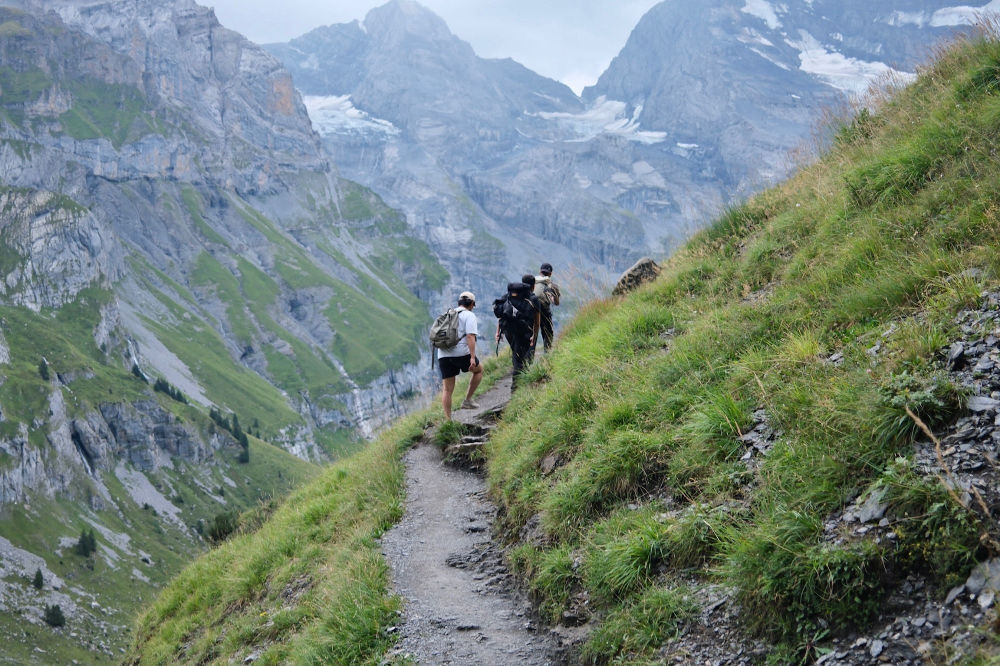

A travel journal by Alfred
Miles & Mountains
Stories from the road, tips that actually help, and the small moments in between.
Read the journalWhere to next
Trips will be sorted by region here. Pick one to see what's on the list.
Traunstein, Austria
A demanding climb above Traunsee, a mountain hut, chamois and a swim in the lake.
The journal
Three ways to follow along: long reads, quick tips, and snapshots.
Follow the trip live
Daily stories and behind-the-scenes go up on Instagram first. The best of it ends up here.
Follow on InstagramSay hello
Got a tip, a question or a trail I should hike? Send me a message on Instagram.